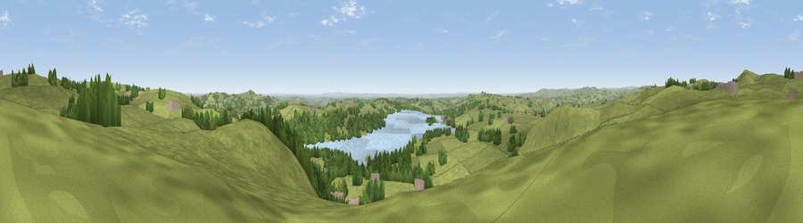

Viewpoint near Carsington
#10829 in England · top 6% of its area beats it · near CarsingtonThe view, rendered

A 360° render of this exact spot computed from the terrain model, tree cover and land cover — summer colours, afternoon light, calibrated against photographs of famous viewpoints. Real trees, hedges and buildings will differ in detail.
The panorama
Grey silhouette: terrain skyline in each direction (720 bearings, Earth curvature and refraction included). Dashed green: skyline with trees (+15 m) and buildings (+8 m) as obstacles. Blue strip: how far the ground is visible on each bearing.
Where the view opens
Wedge length = distance to the farthest visible ground on that bearing (vegetation-aware). Rings at 10, 25 and 50 km.
What fills the view
76% grassland · 14% woodland · 8% water · 1% built-up · 1% cropland
Angular shares of the visible panorama (visual magnitude), not map area. Landscape diversity 0.34 (0–1 Shannon).
Key numbers
More beautiful places nearby
The staircase of upgrades: each row has a higher view potential than everything closer. Driving times are estimates from straight-line distance, calibrated against real road routing — check an actual route before setting out.
| Place | Direction | Drive | Score |
|---|---|---|---|
| Harboro Rocks | NNW · 2 km | ~4 min | 66.7 |
| Viewpoint near Wirksworth | ENE · 5 km | ~10 min | 70.0 |
| Alport Height | ESE · 6 km | ~13 min | 73.9 |
| Tissington Hill | W · 10 km | ~19 min | 75.5 |
| Viewpoint near Mow Cop | W · 39 km | ~58 min | 78.9 |
| Viewpoint near Mow Cop | W · 39 km | ~58 min | 80.2 |
| Viewpoint near Harthill | W · 74 km | ~97 min | 80.5 |
| Viewpoint near Little Wenlock | SW · 76 km | ~100 min | 84.2 |
53.08152, -1.62861 · source: screening · position refined by local search. Computed location — check access rights before visiting.